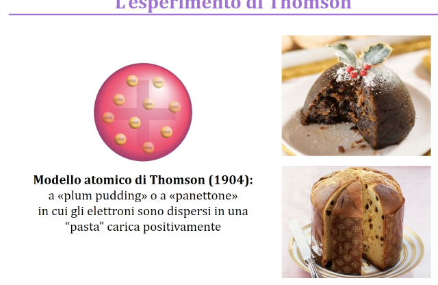
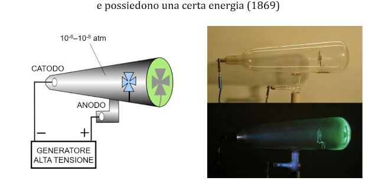
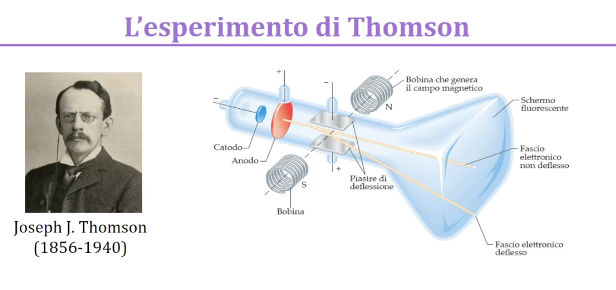
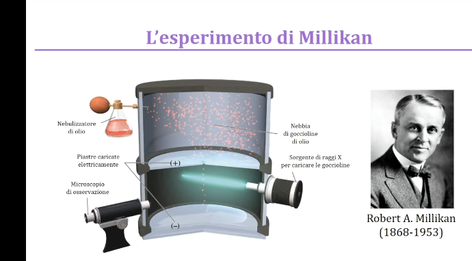
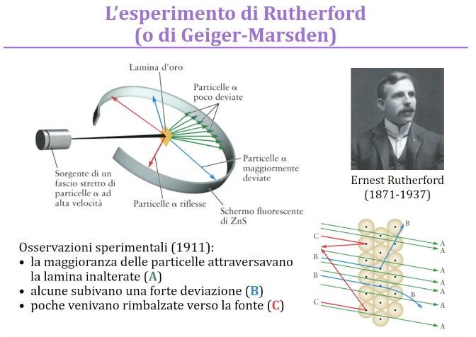
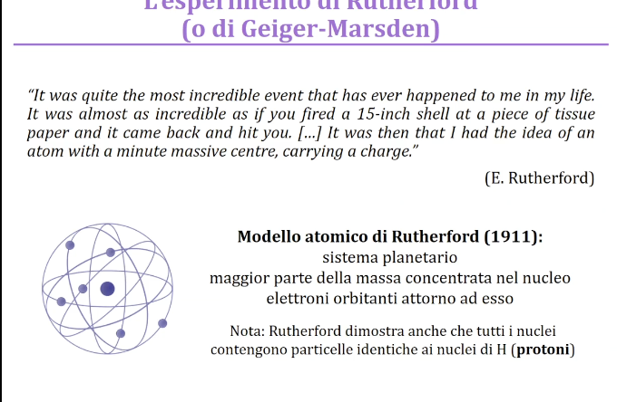
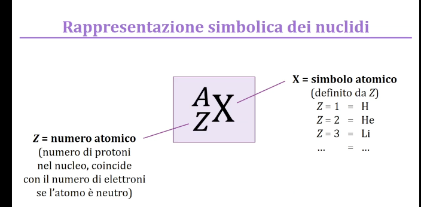
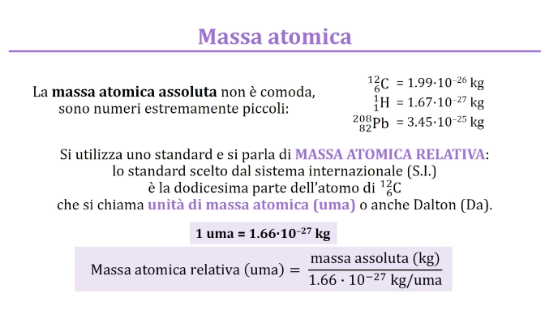
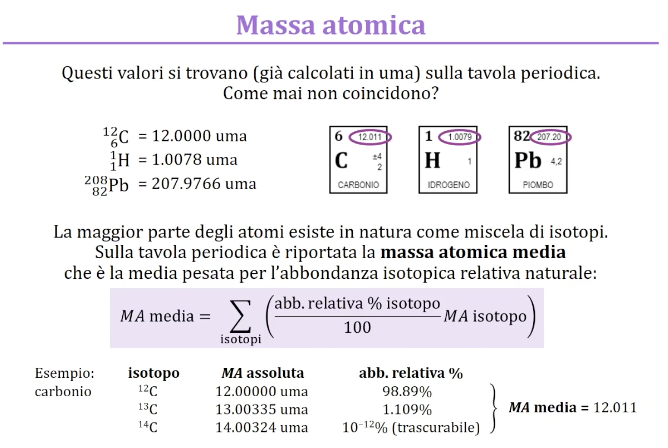
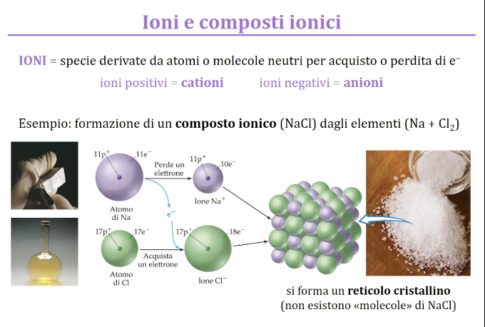

2025-03-02 11:11
_Status: flashcard_zero riscritto_finito revisione_finita
chimica-Lez01
Ecco una spiegazione dettagliata del corso di chimica basata sulle parole del professore Parmegiani, estratte dalla flashcard. Ho incluso esempi, esercizi e spiegazioni, formattando il testo per chiarezza e leggibilità.
Informazioni generali sul corso di chimica
- Docente: Fabio Parmegiani, Dipartimento di Chimica, Materiali e Ingegneria Chimica.
- Contatti: L’email è il metodo di contatto preferibile, oppure durante o dopo le lezioni. L’ufficio si trova in via Mancinelli, a 10-15 minuti da via Ampera.
- Organizzazione del corso: Il corso è composto da lezioni ed esercitazioni.
- Lezioni: Sono previste 21 lezioni da 2 ore ciascuna. Il professore cerca di iniziare verso le 8:20 e finire entro le 10:00. Ad ogni lezione saranno associati dei PowerPoint disponibili sulla pagina Webip.
- Esercitazioni: Sono sempre frontali. Gli esercizi saranno forniti in anticipo rispetto alle lezioni, per permettere agli studenti di provare a risolverli autonomamente. Sono previste 28 ore di esercitazioni, che diventeranno 30 grazie a una lezione aggiuntiva facoltativa di riepilogo.
- Frequenza: La frequenza non è obbligatoria, ma è fortemente consigliata.
- Difficoltà degli esercizi: Gli esercizi dei temi d’esame non saranno più difficili di quelli svolti a lezione.
- Materiale didattico: Tutto il materiale didattico sarà disponibile sulla piattaforma WBIP. Il professore si impegna a caricare il materiale in anticipo, idealmente il giorno prima della lezione.
- Orario:
- Lunedì 9:01,
- Martedì T11 (aule del trifoglio nuove e ristrutturate),
- Giovedì 26 615 (aula un po’ piccola per le esercitazioni).
- Programmazione del corso: Fare riferimento al documento su WVip per il calendario dettagliato delle lezioni. In caso di variazioni, il professore avviserà in aula e aggiornerà il documento su WVip.
- Registrazioni: Le lezioni saranno disponibili in streaming e registrate sul sito Webex. I link saranno disponibili su WVip e sui servizi online.
Libri di testo
- Non è richiesto un libro di testo specifico, ma un qualsiasi testo di chimica a livello universitario è adatto. Molti testi includono già numerosi esercizi. Il professore consiglia alcuni testi utilizzati per preparare le lezioni:
- Brownly May (il più allineato ai contenuti del corso)
- Silverberg
- Atkins, Petrucci e Coz (più approfonditi, utili per consultazione)
- L’ordine degli argomenti può variare da un testo all’altro, ma la chimica è un argomento circolare.
- La videografia è disponibile sulla scheda del corso e sulle slide.
Programma del corso
Il programma del corso coincide con quello di un eventuale corso di chimica del liceo, ma a un livello più approfondito. Gli argomenti principali includono:
- Struttura dell’atomo
- Stechiometria e nomenclatura (considerato un argomento ostico, affrontato subito)
- Tavola periodica degli elementi
- Legami chimici
- Termochimica (influenza dell’energia nelle reazioni chimiche)
- Stati della materia (solidi, liquidi, gas e soluzioni)
- Equilibrio chimico
- Termodinamica chimica
- Acidi e basi
- Cinetica
- Elettrochimica e corrosione (quest’ultimo argomento potrebbe essere escluso a seconda dei tempi)
Esame
- Modalità: Esami scritti da 2 ore con 10 quesiti (teoria, applicazioni, esercizi).
- Teoria e pratica: Entrambe le componenti sono fondamentali. Non è sufficiente saper fare gli esercizi, è necessario comprendere i concetti teorici.
- Orale: L’orale è facoltativo e a discrezione del docente, solitamente richiesto solo in caso di lacune gravi nello scritto.
- Appelli: Sono disponibili cinque appelli all’anno, senza vincoli o salti d’appello.
- Prove in itinere: Non sono previste prove in itinere per il corso di chimica.
- Iscrizione: L’iscrizione all’esame è obbligatoria per poter verbalizzare il voto. L’iscrizione si apre con mesi di anticipo e si chiude pochi giorni prima dell’appello.
- Date appelli Gli appelli sono a gennaio, febbraio, giugno, luglio e settembre.
Perché studiare chimica?
La chimica è fondamentale perché pervade la vita quotidiana. Anche se non si lavorerà direttamente in ambito chimico, è importante conoscere le nozioni di base per interfacciarsi con i colleghi e non fare brutta figura.
Introduzione alla prima lezione
La prima lezione inizia con un’immagine della “Scuola di Atene” di Raffaello, in particolare con un focus su Aristotele, figura centrale nello sviluppo della chimica. Il gruppo di figure che rappresenta un geometra con un compasso è all’origine del logo del Politecnico.
Materia: atomi, molecole e ioni
- Definizione di chimica: Scienza che studia la struttura, la composizione, le proprietà e le trasformazioni della materia.
- Trasformazioni della materia: Le trasformazioni della materia sono chiamate reazioni chimiche.
- Esempi di reazioni chimiche: Trasformazione di soluzioni colorate, combustione di una candela, trasformazione di cellulosa.
- Definizione di materia: Tutto ciò che ha massa e volume.
- Proprietà della materia:
- Estensive: Dipendono dalla quantità (es. massa).
- Intensive: Non dipendono dalla quantità (es. temperatura).
- Trasformazioni della materia:
- Fisiche: Non cambiano la composizione chimica (es. fusione del ghiaccio, riscaldamento di un metallo).
- Chimiche: Cambiano la composizione chimica (es. arrugginimento del ferro, combustione).
- Metodo scientifico: Si basa sull’osservazione, la formulazione di una teoria e la verifica sperimentale. La teoria deve essere modificata se i dati sperimentali non corrispondono.
- Stati di aggregazione della materia: Solido, liquido e gas.
- Solido: Forma e volume propri.
- Liquido: Volume proprio, ma non forma propria.
- Gas: Né forma né volume propri.
- Livelli di studio della chimica:
- Macroscopico (ciò che si può vedere e misurare)
- Microscopico (particelle fondamentali, atomi e interazioni)
- Simbolico (introdotto successivamente)
Teorie sulla composizione della materia
- Teoria dei quattro elementi (Empedocle e Aristotele): Aria, acqua, terra e fuoco combinati in proporzioni diverse costituiscono la materia.
- Teoria atomica (Democrito): La materia è costituita da atomi indivisibili e vuoto. Questa teoria non ebbe successo nell’antichità a causa dell’influenza di Aristotele.
- Robert Boyle: Mette in crisi la teoria dei quattro elementi con il libro “Il chimico scettico”.
Classificazione della materia
La materia può essere distinta in miscele e sostanze pure.
- Miscele: Combinazioni di due o più sostanze.
- Omogenee: Appaiono uniformi ad occhio nudo (es. tè, soluzioni).
- Eterogenee: Presentano differenze visibili nella composizione (es. granito).
- Sostanze pure: Chimicamente omogenee, costituite da un solo tipo di molecola o atomo.
- Elementi: Costituiti da un singolo tipo di atomo (es. ossigeno).
- Composti: Costituiti da atomi diversi (es. acqua). Possono essere molecolari o ionici.
- Metodi di separazione:
- Miscele → Sostanze pure: Metodi fisici (es. distillazione, cristallizzazione).
- Composti → Elementi: Trasformazioni chimiche (rottura dei legami chimici).
Elementi chimici
- Numero: 118 elementi conosciuti, rappresentati nella tavola periodica. Circa 92 presenti in natura.
- Tavola periodica: Organizzazione degli elementi in base alle loro proprietà.
- Periodi: Righe orizzontali.
- Gruppi: Colonne verticali.
- Nomenclatura: Non è necessario memorizzare i nomi e i simboli degli elementi, sono disponibili sulla tavola periodica.
Composti e miscele a livello microscopico
- Elemento in forma atomica: Atomi singoli dello stesso tipo (es. elio).
- Molecole di un elemento: Molecole biatomiche dello stesso elemento (es. ossigeno O₂, azoto N₂).
- Composto molecolare: Molecole formate da atomi di elementi diversi (es. acqua H₂O, fluoruro di boro BF₃).
- Miscela: Coesistenza di elementi e composti diversi a livello microscopico.
- Reazione chimica a livello microscopico: Trasformazione di un insieme di atomi in un altro, con formazione o rottura di legami chimici.
- Esempio di reazione chimica: Trasformazione di una miscela eterogenea di polvere di ferro e zolfo in solfuro di ferro (composto omogeneo) tramite riscaldamento.
Fondamenti della chimica moderna: leggi ponderali
Le leggi ponderali sono osservazioni sperimentali sulle masse delle sostanze che si combinano.
Legge di Conservazione della Massa (Lavoisier)
- Definizione: Durante una trasformazione fisica o chimica, la massa si conserva. In altre parole, in una reazione, la somma delle masse dei reagenti è uguale alla somma delle masse dei prodotti.
- Importanza Storica: Antoine Lavoisier è considerato il padre della chimica moderna perché ha introdotto l’uso della bilancia per misurazioni precise in laboratorio. Questo approccio ha permesso di trasformare la chimica in una scienza quantitativa.
- Esempio: Immagina una reazione chimica come un foglio di calcolo Excel dove devi sommare tutte le quantità a destra (prodotti) e a sinistra (reagenti) dell’equazione; la massa totale deve essere la stessa prima e dopo la reazione.
- Eccezioni: La legge è valida a meno che non si verifichi una conversione di massa in energia secondo la teoria di Einstein (E=mc²), ma queste conversioni sono trascurabili nelle reazioni chimiche ordinarie.
Legge delle Proporzioni Definite (Proust)
- Definizione: Il rapporto tra le masse degli elementi che si combinano per formare un composto è costante e indipendente dal metodo di ottenimento.
- Esempio: L’acqua (H₂O) avrà sempre lo stesso rapporto di massa tra idrogeno e ossigeno, sia che provenga da un oceano, da un lago, dalla pioggia, o sia sintetizzata in laboratorio. La composizione di una molecola è indipendente dalla sua storia.
Legge delle Proporzioni Multiple (Dalton)
- Definizione: Quando due elementi si combinano per formare più di un composto, le masse di un elemento che si combinano con una data massa dell’altro stanno tra loro in un rapporto espresso da numeri interi piccoli.
- Esempio: Considera il carbonio e l’ossigeno che formano monossido di carbonio (CO) e biossido di carbonio (CO₂). Il rapporto tra la massa dell’ossigeno in CO e la massa dell’ossigeno in CO₂ è di 1:2. Questo perché in CO c’è un atomo di ossigeno, mentre in CO₂ ce ne sono due.
- Contesto Storico: Questa legge ha fornito uno spunto importante per la teoria atomica di Dalton, suggerendo che la materia è composta da particelle indivisibili (atomi).
Teoria Atomica di Dalton
- Principi Fondamentali:
- La materia è fatta di particelle indivisibili chiamate atomi.
- Tutti gli atomi di un dato elemento sono identici e hanno le stesse proprietà.
- Atomi di elementi diversi sono diversi.
- Le reazioni chimiche comportano la combinazione o il rimescolamento degli atomi.
- Gli atomi non possono essere interconvertiti in altri atomi tramite reazioni chimiche ordinarie.
- Rappresentazione degli Elementi: Dalton tentò di identificare gli elementi con simboli grafici, ma questo sistema fu presto sostituito da simboli alfabetici.
Simboli Chimici di Berzelius
- Introduzione dei Simboli Alfabetici: Jöns Jacob Berzelius propose di usare lettere al posto dei disegni per rappresentare gli elementi, usando le iniziali dei nomi latini.
- Esempi:
- L’azoto è rappresentato con N (dal latino Nitrogenium).
- Il sodio è rappresentato con Na (dal latino Natrium).
- Quando più elementi hanno la stessa iniziale, si usano le prime due lettere, con la prima maiuscola e la seconda minuscola (es. Cl per il cloro).
Modelli Atomici
- Modello di Thomson (Plum Pudding Model): L’atomo è descritto come una sfera di carica positiva diffusa con elettroni (cariche negative) sparsi al suo interno, come l’uvetta in un panettone.
- 
- Esperimento di Crookes e i Raggi Catodici:
- Procedimento: In un tubo di vetro sotto vuoto spinto, si applica un’alta tensione tra due elettrodi, catodo (negativo) e anodo (positivo). Questo genera un’emanazione dal catodo che viaggia in linea retta verso l’anodo.
- Osservazioni: I raggi catodici proiettano ombre di oggetti posti sul loro cammino e fanno illuminare materiali fluorescenti.
- 
- Esperimento di Thomson:
- Modifiche all’Esperimento di Crookes: Thomson perfezionò l’esperimento usando un anodo a forma di ciambella per collimare i raggi catodici in un fascio stretto. Applicò campi elettrici e magnetici esterni al tubo.
- 
- Osservazioni e Conclusioni:
-
I raggi catodici deviano verso il polo positivo di un campo elettrico, indicando che sono composti da particelle cariche negativamente.
-
La deviazione dei raggi in campi elettrici e magnetici permette di calcolare il rapporto carica/massa delle particelle.
-
Il rapporto carica/massa è indipendente dal materiale del catodo, suggerendo che queste particelle sono costituenti universali di tutti gli atomi. Thomson chiamò queste particelle elettroni.
-
- Esperimento di Millikan (Gocce d’Olio):
-
Gocce d’olio: Millikan utilizzò un nebulizzatore per spruzzare goccioline d’olio cariche elettricamente tra due elettrodi.
-
Raggi X: Le goccioline venivano caricate con raggi X.
-
Equilibrio delle forze: Millikan regolò il campo elettrico per sospendere le goccioline a mezz’aria (catodo in alto), bilanciando la forza di gravità con la forza elettrostatica.
-
Calcolo della carica: Da questo equilibrio, Millikan calcolò la carica dell’elettrone.
-
Massa dell’elettrone: Combinando la carica con il rapporto carica/massa di Thomson, si determinò anche la massa dell’elettrone. 
-
- Esperimento di Rutherford (Foglia d’Oro):
- Procedimento: Un fascio di particelle alfa (nuclei di elio carichi positivamente) viene diretto verso una sottile lamina d’oro. Uno schermo fluorescente circonda la lamina per rilevare la diffusione delle particelle.
- Osservazioni:
- La maggior parte delle particelle alfa attraversa la lamina senza deviazioni significative.
- Alcune particelle alfa vengono deviate a grandi angoli.
- Raramente, alcune particelle alfa vengono respinte indietro.
- Conclusioni:
- La maggior parte dell’atomo è spazio vuoto.
- Quasi tutta la massa dell’atomo e tutta la carica positiva sono concentrate in un nucleo piccolo e denso al centro.
- Gli elettroni orbitano attorno al nucleo.
- Questo portò Rutherford a proporre un modello planetario dell’atomo.
-  
Struttura dell’Atomo
-
Nucleo: Contiene protoni (cariche positive) e neutroni (neutri).
-
Elettroni: Particelle cariche negativamente che orbitano attorno al nucleo.
-
Dimensioni: Il diametro dell’atomo è circa 10⁻¹⁰ m, mentre il nucleo è circa 10⁻¹⁴ m. Se l’atomo fosse grande come uno stadio di calcio, il nucleo sarebbe come una ciliegia.
-
le particelle nucleari (protoni e neutroni ) sono detti nucleoni
-
per indicare genericamente diversi tipi di atomi e/o loro nuclei si parla di nuclidi
-
Masse:
- Protone: circa 1.672 x 10⁻²⁴ g
- Neutrone: circa 1.674 x 10⁻²⁴ g (leggermente più pesante del protone)
- Elettrone: circa 9.1 x 10⁻²⁸ g (molto più leggero di protoni e neutroni)
-
Cariche:
- Protone: +1.6 x 10⁻¹⁹ C
- Elettrone: -1.6 x 10⁻¹⁹ C
- Neutrone: 0
-
Numero Atomico (Z): Numero di protoni nel nucleo. Definisce l’elemento chimico.
-
Numero di Massa (A): Somma del numero di protoni e neutroni nel nucleo. 
-
Isotopi: Atomi dello stesso elemento (stesso Z) con diverso numero di neutroni (diverso A). Esempi: carbonio-12, carbonio-13, carbonio-14. L’idrogeno ha tre isotopi: prozio, deuterio e trizio.
-
Massa Atomica Relativa (UMA o Dalton): Massa di un atomo relativa a 1/12 della massa del carbonio-12. Il carbonio-12 ha una massa di 12 UMA (unità massa atomica) per definizione. 
-
Massa Atomica Media: Media ponderata delle masse degli isotopi di un elemento, tenendo conto delle loro abbondanze naturali. Questo è il valore che si trova sulla tavola periodica. 
Ioni

- Formazione: Un atomo che guadagna o perde elettroni forma uno ione.
- Cationi: Ioni positivi formati dalla perdita di elettroni (es. Na⁺).
- Anioni: Ioni negativi formati dall’acquisto di elettroni (es. Cl⁻).